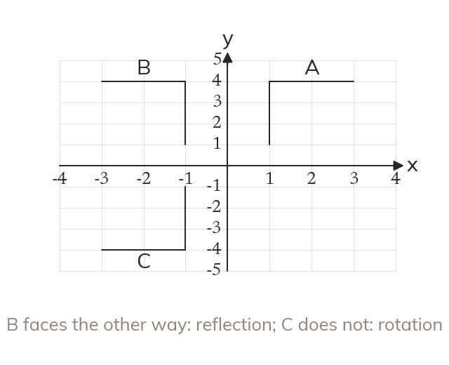
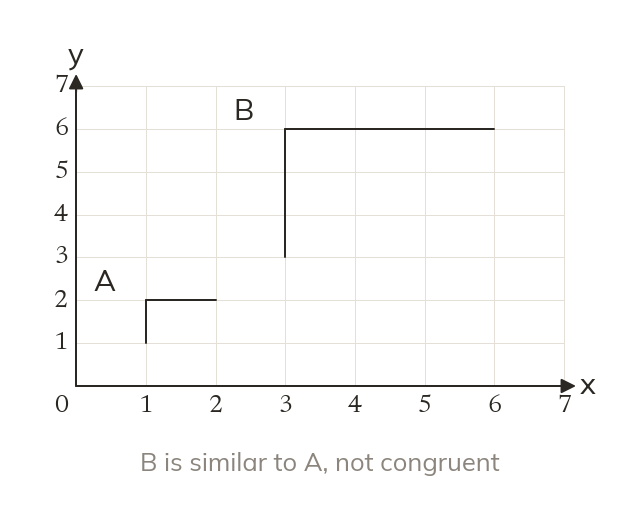
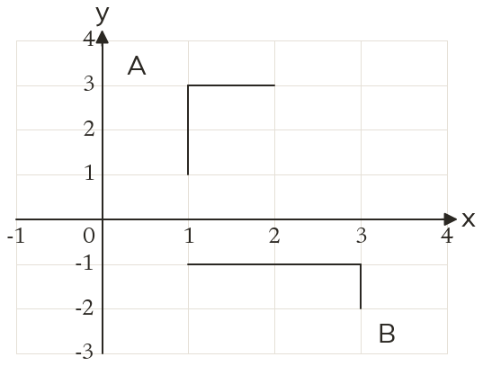
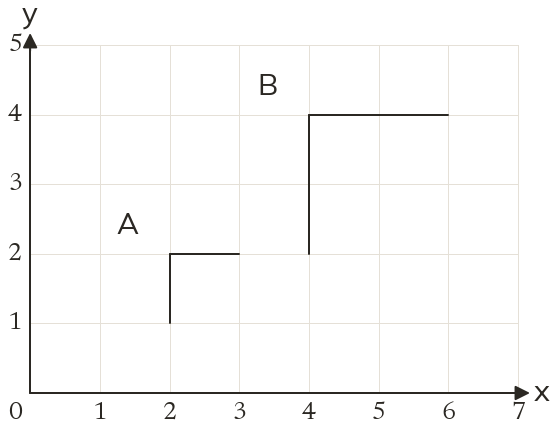
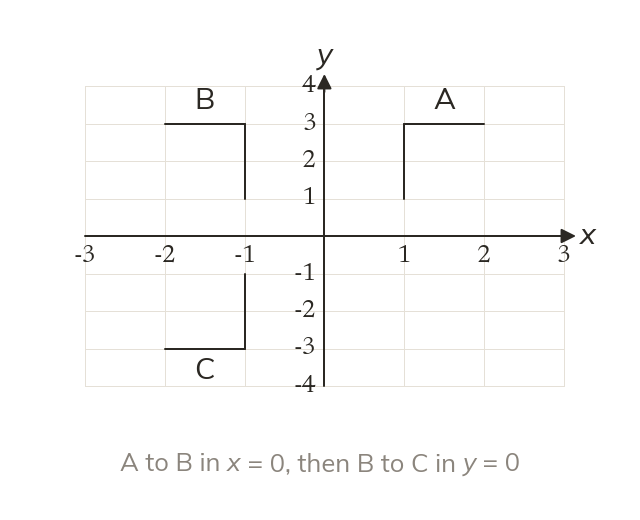
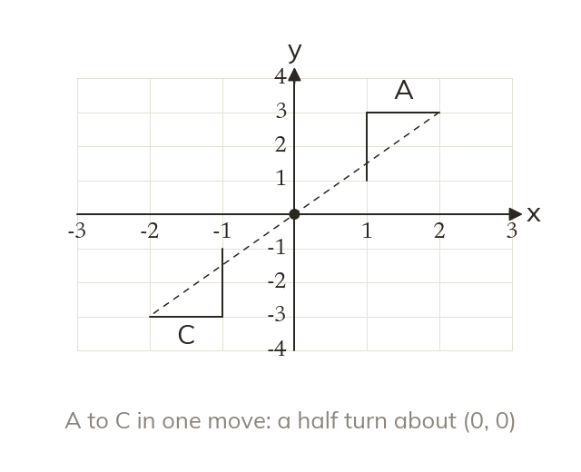
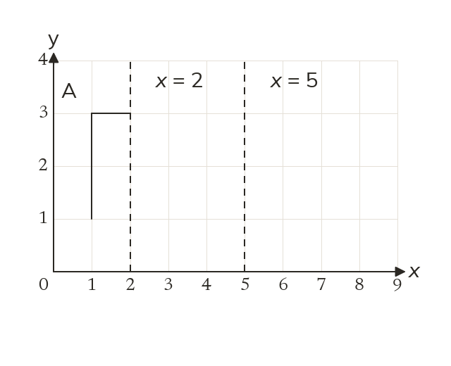
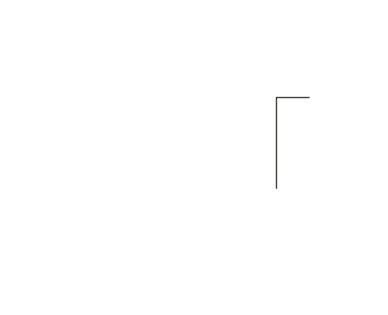
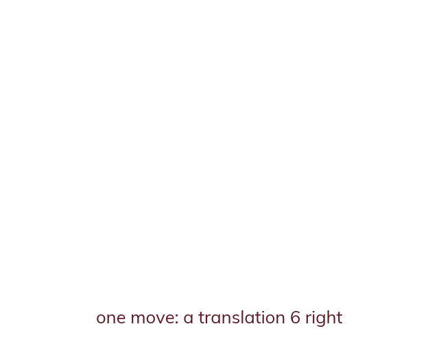

What each description needs
A full description names the transformation and every fact that fixes it. Leave one out, and the image could land in a different place.
A choreographer, a game designer and a textile printer all chain moves together. Each move needs a full description, and two moves can often be replaced by one.
Work down the page at your own pace. Write every answer in your book first, then click to check it.
Read each card, then follow the worked examples one step at a time.
A full description names the transformation and every fact that fixes it. Leave one out, and the image could land in a different place.

A reflection turns a shape over, so its image faces the other way round. A rotation or a translation keeps it facing the same way.

Translations, reflections and rotations keep every length and angle, so the image is congruent. An enlargement changes the lengths, so its image is similar but not congruent.


Pick an answer. If it's wrong, the feedback tells you which mistake it was.
Read each card, then follow the worked examples one step at a time.

In a combination, the second transformation acts on the image the first one made. Carry them out in the order given.

Reflect in x = 0, then in y = 0. The image is a half turn about (0, 0). So the pair is one rotation.



Pick an answer. If it's wrong, the feedback tells you which mistake it was.
Finished? Next lesson: 10.15.1 Midpoints of Line Segments.
Log in, then search for a code to practise that skill.